No
Using Lists Inside InTouch
Follow Step 1 to Step 7 listed in the Initial Steps and continue:
- Select the control in the editor and double click on Lists Configuration under Animations. This will open up a new configuration page from where the Lists control can be configured. After configuring the Lists, click OK. Save and close the Editor.
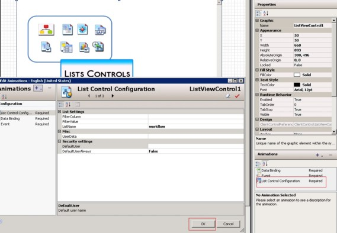
- Select the instance and deploy in the ArchestrA IDE.
- Double-click the $InTouchViewApp instance (aaReactorDemo) under ViewEngine from the ArchestrA IDE.
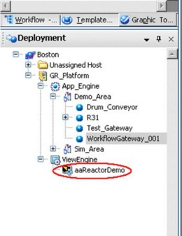
The InTouch WindowMaker appears.
- Create a new window for the Lists control.
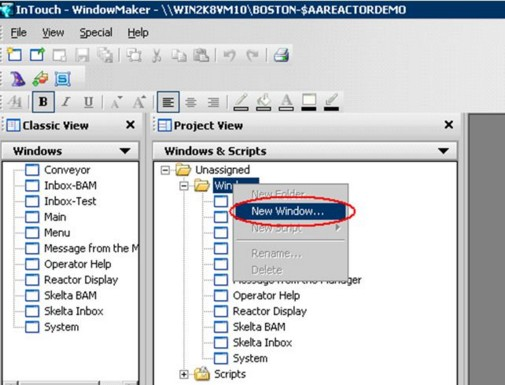
- Provide the name and size for the window.
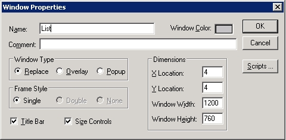
- Right-click inside the newly opened window and select the Embed ArchestrA Graphic option.
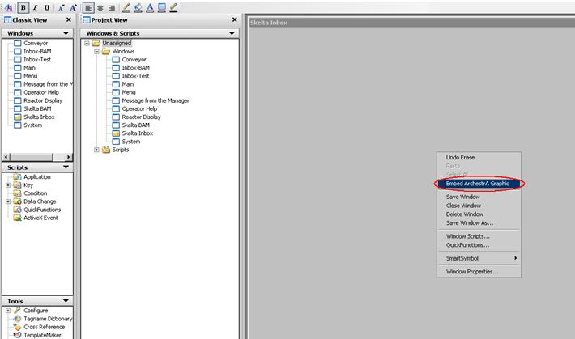
This opens up the ArchestrA Galaxy Browser.
- Select the Instances tab and select the object to which the graphic symbol has been added.
- Select the name of the graphic object (Lists) to be displayed.
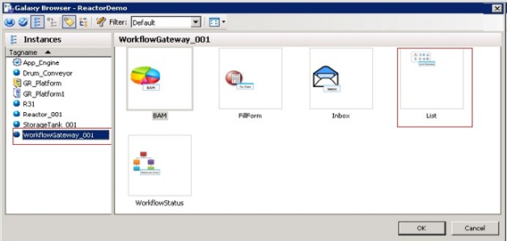
- Enable security for the Lists window, if required.
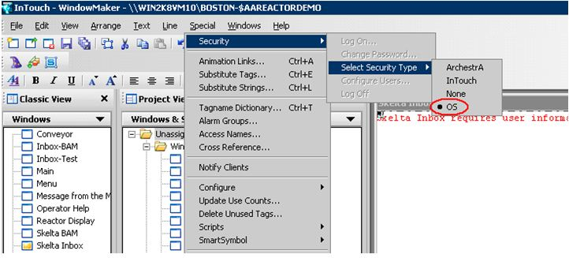
- Save the window and exit InTouch WindowMaker.
- Save and close the object in the ArchestrA IDE.
- Deploy the $InTouchViewApp instance.
- Open the InTouch Viewer and navigate to Special-> Security->Log On.
- Enter the credentials and click OK.
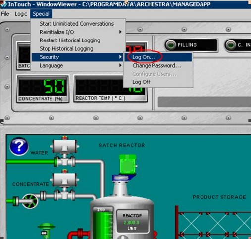
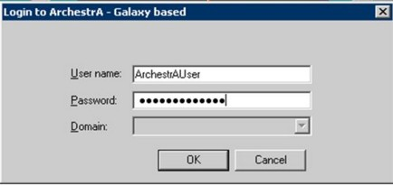
- Open the created Lists window from the File menu.
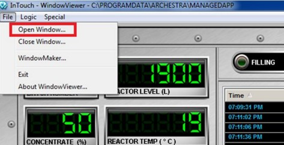
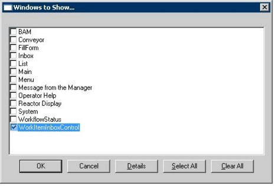
- The Lists Control loads in the window.